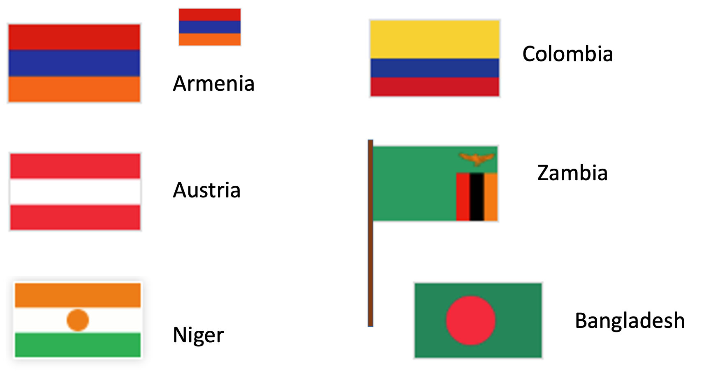

3.1 Getting Started
3.1.1 Motivating Example: Flags
Imagine that you are starting a graphic design company, and want to be able to create images of flags of different sizes and configurations for your customers. The following diagram shows a sample of the images that your software will have to help you create:

Before we try to write code to create these different images, you should step back, look at this collection of images, and try to identify features of the images that might help us decide what to do. To help with this, we’re going to answer a pair of specific questions to help us make sense of the images:
What do you notice about the flags?
What do you wonder about the flags or a program that might produce them?
Do Now!
Actually write down your answers. Noticing features of data and information is an essential skill in computing.
Some things you might have noticed:
Some flags have similar structure, just with different colors
Some flags come in different sizes
Some flags have poles
Most of these look pretty simple, but some real flags have complicated figures on them
Some things you might have wondered:
Do I need to be able to draw these images by hand?
Will we be able to generate different sized flags from the same code?
What if we have a non-rectangular flag?
The features that we noticed suggest some things we’ll need to be able to do to write programs to generate flags:
We might want to compute the heights of the stripes from the overall flag dimensions (we’ll write programs using numbers)
We need a way to describe colors to our program (we’ll learn strings)
We need a way to create images based on simple shapes of different colors (we’ll create and combine expressions)
Let’s get started!
3.1.2 Numbers
Start simple: compute the sum of 3 and 5.
To do this computation with a computer, we need to write down the computation and ask the computer to run or evaluate the computation so that we get a number back. A software or web-application in which you write and run programs is called a programming environment. In the first part of this course, we will use a language called Pyret.
Go to the on-line editor (which we’ll henceforth refer to as “CPO”). For now, we will work only in the right-hand side (the interactions pane).
3 and 5. Here’s what we write:
|
Press the Return key, and the result of the computation will appear on the line below the prompt, as shown below:
| |
|
Not surprisingly, we can do other arithmetic computations
| |
|
(Note: * is how we write the multiplication sign.)
What if we try 3 + 4 * 5?
Do Now!
Try it! See what Pyret says.
Pyret gave you an error message. What it says is that Pyret isn’t sure whether we mean
(3 + 4) * 5or
3 + (4 * 5)so it asks us to include parentheses to make that explicit. Every programming language has a set of rules about how you have to write down programs. Pyret’s rules require parentheses to avoid ambiguity.
| |
|
| |
|
Another Pyret rule requires spaces around the arithmetic operators. See what happens if you forget the spaces:
|
Pyret will show a different error message that highlights the part of the code that isn’t formatted properly, along with an explanation of the issue that Pyret has detected. To fix the error, you can press the up-arrow key within the right pane and edit the previous computation to add the spaces.
Do Now!
Try doing it right now, and confirm that you succeeded!
What if we want to get beyond basic arithmetic operators? Let’s say we want the minimum of two numbers. We’d write this as
|
num-? It’s because “minimum” is a concept that makes sense
on data other than numbers; Pyret calls the min operator num-min to
avoid ambiguity.3.1.3 Expressions
Note that when we run num-min, we get a number in return (as we did
for +, *, …). This means we should be able to use the result of
num-min in other computations where a number is expected:
| |
|
| |
|
Hopefully you are starting to see a pattern. We can build up more complicated computations from smaller ones, using operations to combine the results from the smaller computations. We will use the term expression to refer a computation written in a format that Pyret can understand and evaluate to an answer.
Exercise
In CPO, try to write the expressions for each of the following computations:
subtract 3 from 7, then multiply the result by 4
subtract 3 from the multiplication of 7 and 4
the sum of 3 and 5, divided by 2
the max of 10 subtracted from 5 and -20
2 divided by the sum of 3 and 5
Do Now!
What if you get a fraction as a response?
If you’re not sure how to get a fraction, there are two ways: you can either write an expression that produces a fractional answer, or you can type one in directly (e.g.,
1/3).Either way, you can click on the result in the interactions pane to change how the number is presented. Try it!
3.1.4 Terminology
Look at an interaction like
| |
|
There are actually several kinds of information in this interaction, and we should give them names:
Expression: a computation written in the formal notation of a programming language
Examples here include
4,5 + 1, and(3 + 4) * (5 + 1)Value: an expression that can’t be computed further (it is its own result)
So far, the only values we’ve seen are numbers.
Program: a sequence of expressions that you want to run
3.1.5 Strings
What if we wanted to write a program that used information other than numbers, such as someone’s name? For names and other text-like data, we use what are called strings. Here are some examples:
"Kathi"
"Go Bears!"
"CSCI0111"
"Carberry, Josiah"What do we notice? Strings can contain spaces, punctuation, and
numbers. We use them to capture textual data. For our flags
example, we’ll use strings to name colors: "red", "blue", etc.
Note that strings are case-sensitive, meaning that capitalization matters (we’ll see where it matters shortly).
3.1.6 Images
We have seen two kinds of data: numbers and strings. For flags, we’ll
also need images. Images are different from both numbers and strings
(you can’t describe an entire image with a single number—
Pyret has built-in support for images. When you start up Pyret, you’ll see a grayed-out line that says “use context essentials2021” (or something similar). This line configures Pyret with some basic functionality beyond basic numbers and strings.
Do Now!
Press the “Run” button (to activate the features in essentials), then write each of these Pyret expressions at the interactions prompt to see what they produce:
circle(30, "solid", "red")
circle(30, "outline", "blue")
rectangle(20, 10, "solid", "purple")
Each of these expressions names the shape to draw, then configures the shape in the parentheses that follow. The configuration information consists of the shape dimensions (the radius for circles, the width and height for rectangles, both measured in screen pixels), a string indicating whether to make a solid shape or just an outline, then a string with the color to use in drawing the shape.
Which shapes and colors does Pyret know about? Hold this question for just a moment. We’ll show you how to look up information like this in the documentation shortly.
3.1.6.1 Combining Images
Earlier, we saw that we could use operations like + and
* to combine numbers through expressions. Any time you get a
new kind of datum in programming, you should ask what operations the
language gives you for working with that data. In the case of images
in Pyret, the collection includes the ability to:
rotate them
scale them
flip them
put two of them side by side
place one on top of the other
and more ...
Let’s see how to use some of these.
Exercise
Type the following expressions into Pyret:
rotate(45, rectangle(20, 30, "solid", "red"))What does the
45represent? Try some different numbers in place of the45to confirm or refine your hypothesis.overlay(circle(25, "solid", "yellow"), rectangle(50, 50, "solid", "blue"))Can you describe in prose what
overlaydoes?above(circle(25, "solid", "red"), rectangle(30, 50, "solid", "blue"))What kind of value do you get from using the
rotateoraboveoperations? (hint: your answer should be one of number, string, or image)
These examples let us think a bit deeper about expressions. We have
simple values like numbers and strings. We have operations or
functions that combine values, like + or
rotate (“functions” is the term more commonly used in
computing, whereas your math classes likely used “operations”). Every
function produces a value, which can be used as input to another
function. We build up expressions by using values and the outputs of
functions as inputs to other functions.
For example, we used above to create an image out of two
smaller images. We could take that image and rotate it using the
following expression.
rotate(45,
above(circle(25, "solid", "red"),
rectangle(30, 50, "solid", "blue")))This idea of using the output of one function as input to another is known as composition. Most interesting programs arise from composing results from one computation with another. Getting comfortable with composing expressions is an essential first step in learning to program.
Exercise
Try to create the following images:
a blue triangle (you pick the size). As with
circle, there is atrianglefunction that takes a side length, fill style, and color and produces an image of an equilateral triangle.a blue triangle inside a yellow rectangle
a triangle oriented at an angle
a bullseye with 3 nested circles aligned in their centers (e.g., the Target logo)
whatever you want—
play around and have fun! The bullseye might be a bit challenging. Theoverlayfunction only takes two images, so you’ll need to think about how to use composition to layer three circles.
3.1.6.2 Making a Flag
We’re ready to make our first flag! Let’s start with the flag of Armenia, which has three horizontal stripes: red on top, blue in the middle, and orange on the bottom.
Exercise
Use the functions we have learned so far to create an image of the Armenian flag. You pick the dimensions (we recommend a width between 100 and 300).
Make a list of the questions and ideas that occur to you along the way.
3.1.7 Stepping Back: Types, Errors, and Documentation
Now that you have an idea of how to create a flag image, let’s go back and look a bit more carefully at two concepts that you’ve already encountered: types and error messages.
3.1.7.1 Types and Contracts
Now that we are composing functions to build more complicated expressions out of smaller ones, we will have to keep track of which combinations make sense. Consider the following sample of Pyret code:
8 * circle(25, "solid", "red")What value would you expect this to produce? Multiplication is meant to work on numbers, but this code asks Pyret to multiply a number and an image. Does this even make sense?
This code does not make sense, and indeed Pyret will produce an error message if we try to run it.
Do Now!
Try to run that code, then look at the error message. Write down the information that the error message is giving you about what went wrong (we’ll come back to your list shortly).
The bottom of the error message says:
The * operator expects to be given two Numbers
Notice the word “Numbers”. Pyret is telling you what kind of
information works with the * operation. In programming, values
are organized into types (e.g., number, string, image). These
types are used in turn to describe what kind of inputs and results (a.k.a.,
outputs) a function works with. For example, * expects to be given two
numbers, from which it will return a number. The last expression we
tried violated that expectation, so Pyret produced an error message.
Talking about “violating expectations” sounds almost legal, doesn’t it? It does, and the term contract refers to the required types of inputs and promised types of outputs when using a specific function. Here are several examples of Pyret contracts (written in the notation you will see in the documentation):
* :: (x1 :: Number, x2 :: Number) -> Number
circle :: (radius :: Number,
mode :: String,
color :: String) -> Image
rotate :: (degrees :: Number,
img :: Image) -> Image
overlay :: (upper-img :: Image,
lower-img :: Image) -> ImageDo Now!
Look at the notation pattern across these contracts. Can you label the various parts and what information they appear to be giving you?
Let’s look closely at the overlay contract to make sure you
understand how to read it. It gives us several pieces of information:
There is a function called
overlayIt takes two inputs (the parts within the parentheses), both of which have the type
ImageThe first input is the image that will appear on top
The second input is the image that will appear on the bottom
The output from calling the function (which follows
->) will have typeImage
In general, we read the double-colon (::) as “has the type”. We
read the arrow (->) as “returns”.
Whenever you compose smaller expressions into more complex
expressions, the types produced by the smaller expressions have to
match the types required by the function you are using to compose
them. In the case of our erroneous * expression, the contract
for * expects two numbers as inputs, but we gave an image for
the second input. This resulted in an error message when we tried to
run the expression.
A contract also summarizes how many inputs a function
expects. Look at the contract for the circle function. It
expects three inputs: a number (for the radius), a string (for the
style), and a string (for the color). What if we forgot the style
string, and only provided the radius and color, as in:
circle(100, "purple")The error here is not about the type of the inputs, but rather about the number of inputs provided.
Exercise
Run some expressions in Pyret that use an incorrect type for some input to a function. Run others where you provide the wrong number of inputs to a function.
What text is common to the incorrect-type errors? What text is common to the wrong numbers of inputs?
Take note of these so you can recognize them if they arise while you are programming.
3.1.7.2 Format and Notation Errors
We’ve just seen two different kinds of mistakes that we might make while programming: providing the wrong type of inputs and providing the wrong number of inputs to a function. You’ve likely also run into one additional kind of error, such as when you make a mistake with the punctuation of programming. For example, you might have typed an example such as these:
3+7circle(50 "solid" "red")circle(50, "solid, "red")circle(50, "solid," "red")circle 50, "solid," "red")
Do Now!
Make sure you can spot the error in each of these! Evaluate these in Pyret if necessary.
You already know various punctuation rules for writing prose. Code also has punctuation rules, and programming tools are strict about following them. While you can leave out a comma and still turn in an essay, a programming environment won’t be able to evaluate your expressions if they have punctuation errors.
Do Now!
Make a list of the punctuation rules for Pyret code that you believe you’ve encountered so far.
Here’s our list:
Spaces are required around arithmetic operators.
Parentheses are required to indicate order of operations.
When we use a function, we put a pair of parentheses around the inputs, and we separate the inputs with commas.
If we use a double-quotation mark to start a string, we need another double-quotation mark to close that string.
In programming, we use the term syntax to refer to the rules of writing proper expressions (we explicitly didn’t say “rules of punctuation” because the rules go beyond what you think of as punctuation, but that’s a fair place to start). Making mistakes in your syntax is common at first. In time, you’ll internalize the rules. For now, don’t get discouraged if you get errors about syntax from Pyret. It’s all part of the learning process.
3.1.7.3 Finding Other Functions: Documentation
At this point, you may be wondering what else you can do with images. We mentioned scaling images. What other shapes might we make? Is there a list somewhere of everything we can do with images?
Every programming language comes with documentation, which is where you find out the various operations and functions that are available, and your options for configuring their parameters. Documentation can be overwhelming for novice programmers, because it contains a lot of detail that you don’t even know that you need just yet. Let’s take a look at how you can use the documentation as a beginner.
Open the Pyret Image Documentation. Focus on the sidebar on the left. At the top, you’ll see a list of all the different topics covered in the documentation. Scroll down until you see “rectangle” in the sidebar: surrounding that, you’ll see the various function names you can use to create different shapes. Scroll down a bit further, and you’ll see a list of functions for composing and manipulating images.
If you click on a shape or function name, you’ll bring up details on using that function in the area on the right. You’ll see the contract in a shaded box, a description of what the function does (under the box), and then a concrete example or two of what you type to use the function. You could copy and paste any of the examples into Pyret to see how they work (changing the inputs, for example).
For now, everything you need documentation wise is in the section on images. We’ll go further into Pyret and the documentation as we go.